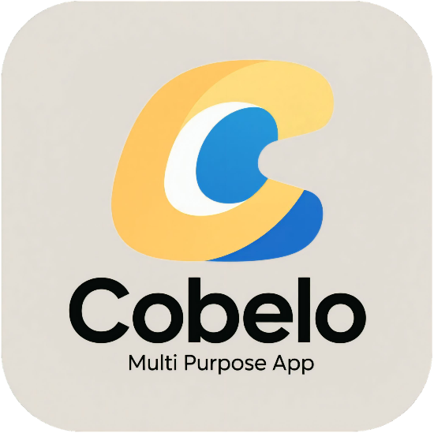
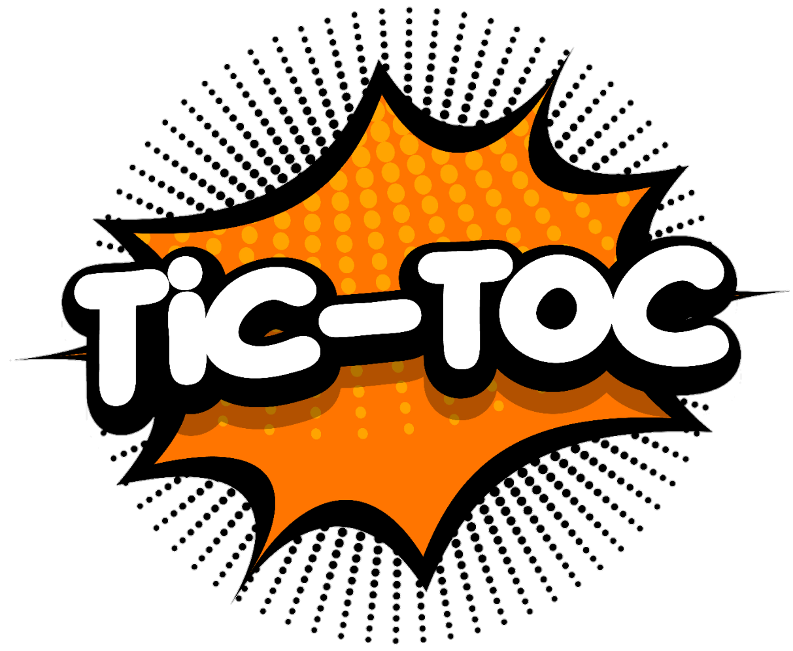
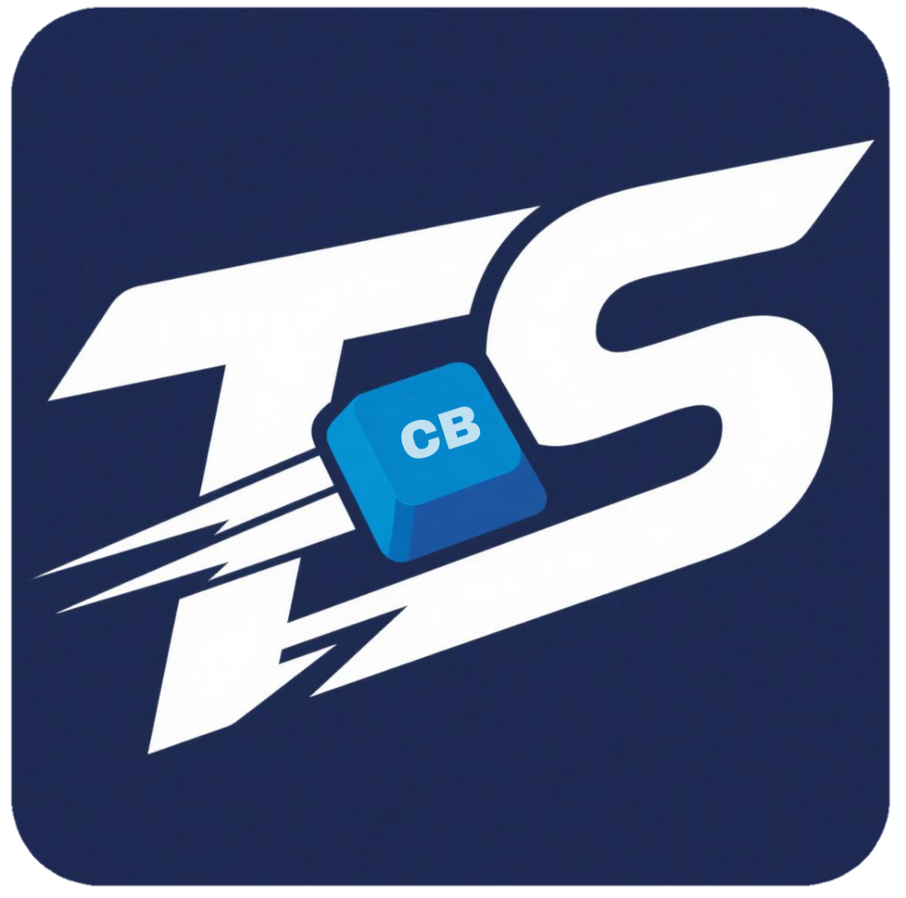
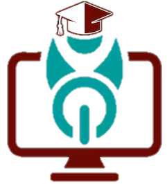
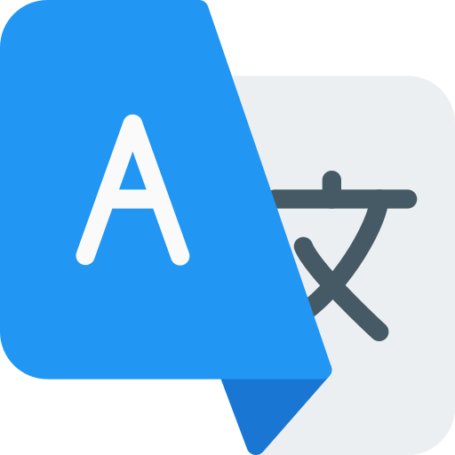
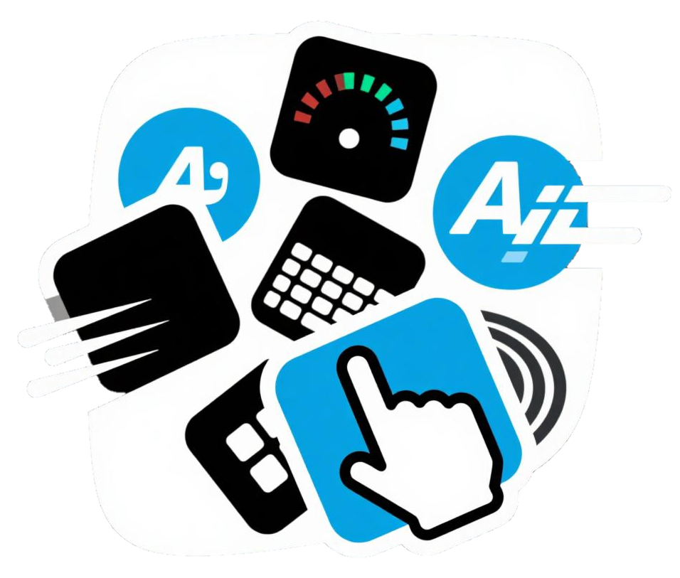
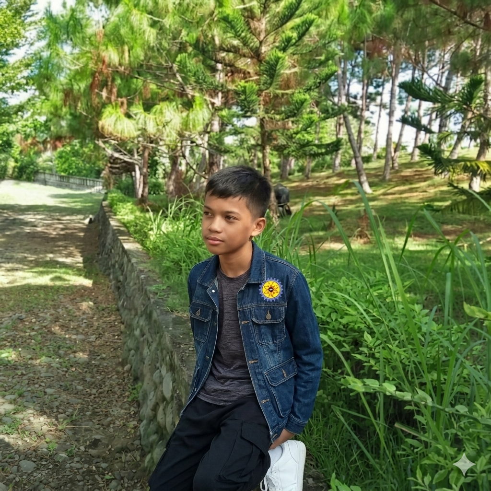

The future is, by its very nature, personal. Technology is the instrument we employ to meticulously craft your individual world.

Stay connected with the community
latest post
Follow us on social media for updates and more
CrispinJr Cobelo
@crispbaph
@crispincobelo
CrispBa

.png) CrispBa Folder
CrispBa Folder.png) Google Drive
Google Drive.png) Bible Quest
Bible Quest About
About Message US
Message US